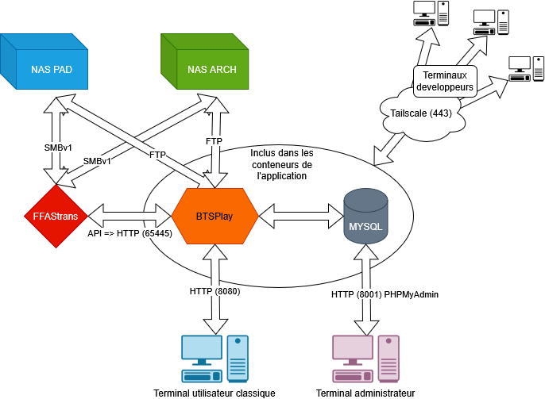
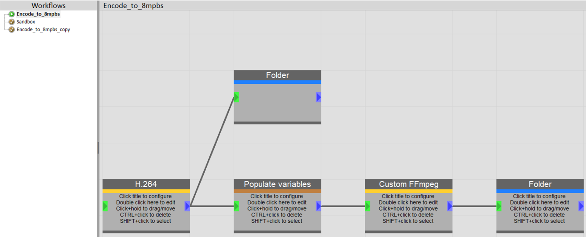
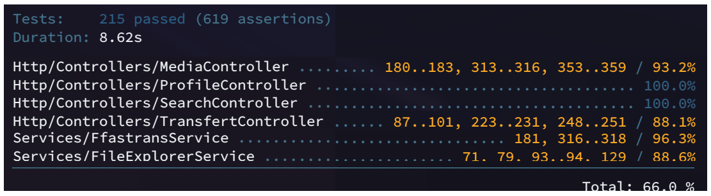
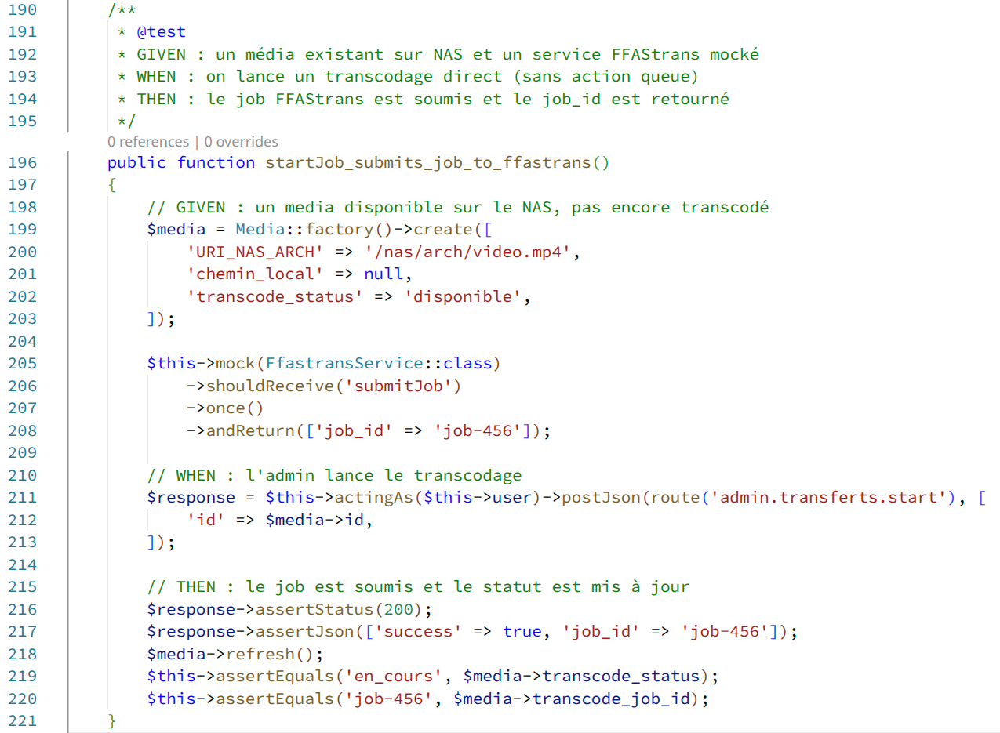
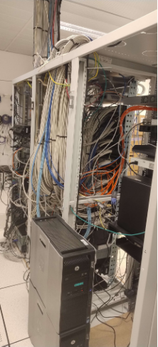
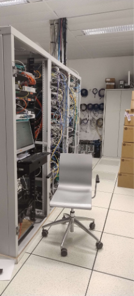
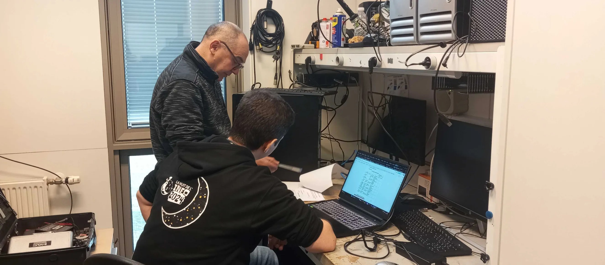

Solution professionnelle de gestion d'actifs vidéo
pour le BTS Audiovisuel du Lycée René Cassin
SAÉ S.6.01 - BUT Informatique 3 Parcours D - IUT de Bayonne
2025 - 2026
Le BTS Audiovisuel du Lycée René Cassin produit quotidiennement des contenus vidéo professionnels stockés sur deux serveurs NAS distincts. Reprise d'un projet initié en 2024-2025 dont la livraison n'était pas exploitable.
XDCAM HD 50Mb/s - Prêt à Diffuser, qualité maximale pour le montage
H.264 25Mb/s - Archivage et consultation web
Mission : Développer un MAM adapté aux besoins du BTS : détection et indexation des fichiers sur les NAS, enrichissement de métadonnées, visualisation web, et transfert/transcodage via FFAStrans
5 étudiants de BUT Informatique 3 - Parcours D (IAMSI)
IUT de Bayonne - SAÉ S.6.01 - 2025-2026
Commanditaire : M. MARTIN Philippe (BTS Audiovisuel Lycée René Cassin)
github.com/brs64/Media-Asset-Manager
Indexation automatique des vidéos sur les deux NAS avec réconciliation intelligente
Streaming HLS adaptatif avec génération de miniatures
Intégration FFAStrans pour conversion MXF ↔ MP4
Authentification et permissions (Étudiants, Professeurs, Admins)
Moteur de recherche avec filtrage
Synchronisation, réconciliation, logs, backups et import CSV d'élèves
Dépose un MXF sur le NAS. BTSPlay indexe, génère une miniature et transcrit en MP4.
Recherche les projets d'une promotion via filtres, visionne dans le navigateur et commente les métadonnées.
Déclencher les transcodages nécessaires via liste d'attente.
⬇️ Scénarios avancés
Import massif de promotion :
L'admin importe un CSV avec 50 étudiants. Le système crée automatiquement les comptes et attribue les rôles.
Sauvegarde de la BD :
L'admin peut lancer une sauvegarde manuelle de la base de données. Une copie .sql est générée et stockée sur le serveur.
Réconciliation de NAS :
L'admin lance une réconciliation qui compare les fichiers entre NAS PAD et NAS Archivage, identifie les manquants et déclenche les transcodages nécessaires.
Application en action sur serv-btsplay-01:8080
Livraison effective de l'application
Image btsplay-app:prod multi-stage | Accès NAS via SMBv1

Réconcilier deux NAS avec des fichiers dans différents formats et éviter les doublons
Segmentation HLS à la volée pour des fichiers de plusieurs Go sans saturer le serveur
Transcodage de vidéos longues sans bloquer l'interface, avec gestion des échecs et reprises
Système de rôles complexe permettant un contrôle fin des accès selon le profil utilisateur
⬇️ Solutions apportées
Pour la synchronisation :
Pour le streaming :
Pour les jobs asynchrones :
Moteur de workflow de transcodage piloté par BTSPlay via API HTTP (port 65445)

215 tests - 16 fichiers - BDD SQLite in-memory - 5s
Controllers, miniatures, indexation, streaming
FFAStrans, transferts, jobs asynchrones
Recherche, explorateur de fichiers, arborescence NAS
Panel admin, permissions, profils, authentification
⬇️ Couverture
Standard professionnel visé, priorisation des composants critiques


Windows Server 2022, on-premise au Lycée - 2x12 coeurs, 16 Go RAM - Docker Desktop - Opérationnel depuis octobre 2025


Tailscale VPN (Wireguard) avec 2FA obligatoire, ré-authentification quotidienne
Port obfusqué (10022), clé publique uniquement, admin interdit
Audit NMAP, ports fermés, spouleur d'impression désactivé, scripts PS bloqués
Utilisateurs sans privilège, moindre privilège, verrouillage après 3 tentatives

Synthèse et positionnement
Streaming HLS optimisé avec cache de miniatures
Authentification Laravel Breeze + permissions basées sur les rôles
Indexation auto, transcodage en arrière-plan, réconciliation NAS
Doxygen technique, guide utilisateur, README d'installation
Solution production-ready déployée sur SERV-BTSPLAY-01 pour le quotidien du BTS Audiovisuel
Relation commanditaire, documentation Doxygen, rôles et permissions Spatie
Pilotage agile, tests fonctionnels, gestion des utilisateurs et import CSV élèves
Architecture Docker dev/prod, tests unitaires et d'intégration, sécurisation et déploiement
Tests et documentation PHPDoc/Doxygen, gestion des miniatures, streaming, sécurisation et déploiement
Interface transferts et administration, transcodage par dossier, recherche et UX
MAM complet pour le BTS Audiovisuel du Lycée René Cassin
Des questions ?